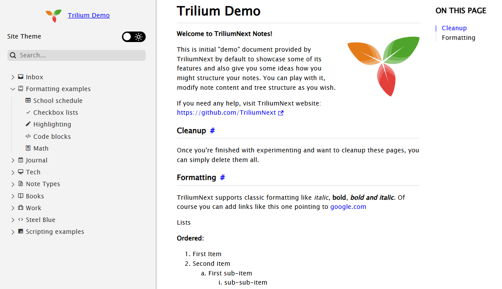
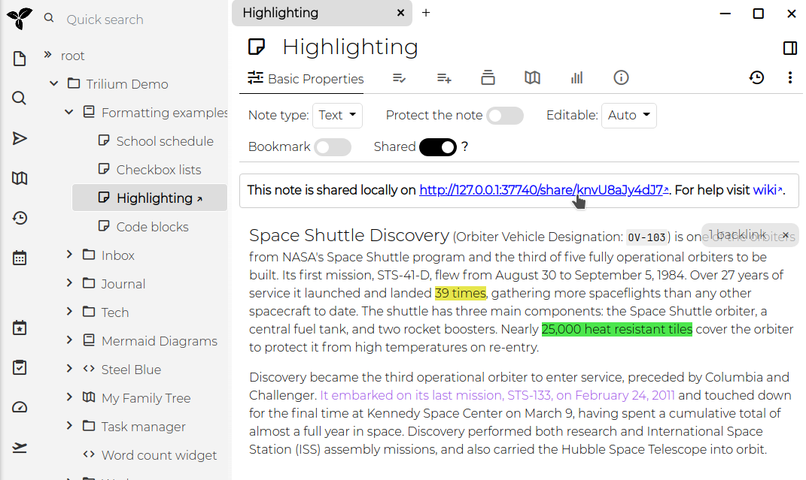

Trilium allows you to share selected notes as publicly accessible read-only documents. This feature is particularly useful for publishing content directly from your Trilium notes, making it accessible to others online.

| Supported features | Limitations | |
|---|---|---|
| Text |
|
|
| Code |
|
|
| Saved Search | Not supported. | |
| Relation Map | Not supported. | |
| Note Map | Not supported. | |
| Render Note | Not supported. | |
| Collections |
|
|
| Mermaid Diagrams |
|
|
| Canvas |
|
|
| Web View | Not supported. | |
| Mind Map | The diagram is displayed as a vector image. |
|
| Geo Map | Not supported. | |
| File | Basic interaction (downloading the file). |
|
While the sharing feature is powerful, it has some limitations:
Some of these limitations may be addressed in future updates.
To use the sharing feature, you must have a Server Installation of Trilium. This is necessary because the notes will be hosted from the server.
Enable Sharing: To share a note, toggle the Shared switch
within the note's interface. Once sharing is enabled, an URL will appear,
which you can click to access the shared note.

Access the Shared Note: The link provided will open the
note in your browser. If your server is not configured with a public IP,
the URL will refer to localhost (127.0.0.1).
When you share a note, you actually share the entire subtree of notes beneath it. If the note has child notes, they will also be included in the shared content. For example, sharing the "Formatting" subtree will display a page with basic navigation for exploring all the notes within that subtree.
You can view a list of all shared notes by clicking on "Show Shared Notes Subtree" in the Global menu. This allows you to manage and navigate through all the notes you have made public.
To protect shared notes with a username and password, you can use the
#shareCredentialsattribute. Add this label to the note with the
format #shareCredentials="username:password".
To protect an entire subtree, make sure the label is inheritable.
The default design should be a good starting point, but you can customize it using your own CSS:
~shareCss relation to the note. If you
want this style to apply to the entire subtree, make the label inheritable.
You can hide the CSS code note from the tree navigation by adding the
#shareHiddenFromTreelabel.#shareOmitDefaultCss label to avoid
conflicts with Trilium's default stylesheet.You can inject custom JavaScript into the shared note using the ~shareJs relation.
This allows you to access note attributes or traverse the note tree using
the fetchNote() API, which retrieves note
data based on its ID.
You can inject custom HTML snippets into specific locations of the shared
page using the ~shareHtml relation. The HTML
note should contain the raw HTML content you want to inject, and you can
control where it appears by adding the #shareHtmlLocation label
to the HTML snippet note itself.
The #shareHtmlLocation label accepts values
in the format location:position:
head,
body, content
start,
end
For example:
#shareHtmlLocation=head:start - Injects
HTML at the beginning of the <head> section#shareHtmlLocation=head:end - Injects HTML
at the end of the <head> section (default)#shareHtmlLocation=body:start - Injects
HTML at the beginning of the <body> section#shareHtmlLocation=content:start - Injects
HTML at the beginning of the content area#shareHtmlLocation=content:end - Injects
HTML at the end of the content areaIf no location is specified, the HTML will be injected at content:end by
default.
Example:
const currentNote = await fetchNote();
const parentNote = await fetchNote(currentNote.parentNoteIds[0]);
for (const attr of parentNote.attributes) {
console.log(attr.type, attr.name, attr.value);
}Shared notes typically have URLs like http://domain.tld/share/knvU8aJy4dJ7,
where the last part is the note's ID. You can make these URLs more user-friendly
by adding the #shareAlias label to individual
notes (e.g., #shareAlias=highlighting).
This will change the URL to http://domain.tld/share/highlighting.
Important:
/) within aliases to create
subpaths is not supported.To customize the favicon for your shared pages, create a relation
~shareFaviconpointing to a file note containing the favicon (e.g.,
in .ico format).
You can designate a specific note or folder as the root of your shared
content by adding the #shareRoot label. This
note will be linked when visiting [http://domain.tld/share](http://domain/share),
making it easier to use Trilium as a fully-fledged website.
When accessing a share, the sub-notes will be displayed in a tree on the left. But since multiple note trees can be shared, it might be useful to display a list of all the different share trees.
To do so, create a shared text note and apply the shareIndex label.
When viewed, the list of shared roots will be displayed at the bottom of
the note.
| Attribute | Description |
|---|---|
#shareHiddenFromTree
|
this note is hidden from left navigation tree, but still accessible with its URL |
#shareExternalLink
|
note will act as a link to an external website in the share tree |
#shareAlias
|
define an alias using which the note will be available under https://your_trilium_host/share/[your_alias]
|
#shareOmitDefaultCss
|
default share page CSS will be omitted. Use when you make extensive styling changes. |
#shareRoot
|
marks note which is served on /share root. |
#shareDescription
|
define text to be added to the HTML meta tag for description |
#shareRaw
|
Note will be served in its raw format, without HTML wrapper. See also Serving directly the content of a note for an alternative method without setting an attribute. |
#shareDisallowRobotIndexing
|
Indicates to web crawlers that the page should not be indexed of this note by:
|
#shareCredentials
|
require credentials to access this shared note. Value is expected to be
in format username:password. Don't forget to make this inheritable
to apply to child-notes/images. |
#shareIndex
|
Note with this label will list all roots of shared notes. |
#shareHtmlLocation
|
defines where custom HTML injected via ~shareHtml relation
should be placed. Applied to the HTML snippet note itself. Format: location:position where
location is head, body, or content and
position is start or end. Defaults to content:end. |
It's possible to adjust the logo which is displayed on the top-left of the left pane.
| Attribute | Description |
|---|---|
~shareLogo
|
Relation set to an image to use as logo. The image must be part of the share tree (it can be hidden if needed). |
#shareLogoWidth
|
The width (in pixels, without unit) to set for the logo. Default is
53. |
#shareLogoHeight
|
The height (in pixels, without unit) to set for the logo. Default is
40. |
#shareRootLink
|
URL to navigate to when the logo is pressed. |
| Attribute | Description |
|---|---|
#shareOpenGraphColor
|
This adjusts the theme-color meta-property. |
#shareOpenGraphURL
|
This adjusts the og:url and twitter:url meta-properties. |
#shareOpenGraphDomain
|
Adjusts the twitter:domain meta-property. |
#shareOpenGraphImage
~shareOpenGraphImage
|
Can be either a label, case in which the value is passed on as-is, or
it can be a relation to an image File.
This controls the og:image meta-property. |
Since v0.95.0, a new theme was introduced (and enabled by default) which greatly improves the visual aspect of the Share feature, as well as its functionality (such as mobile support, dark/light mode, collapsible tree, etc.). This theme is an adaptation of the Trilium Rocks! by zerebos.